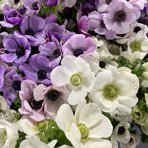
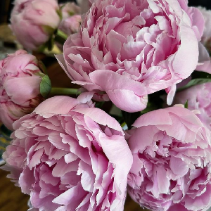
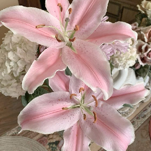
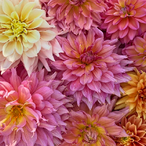
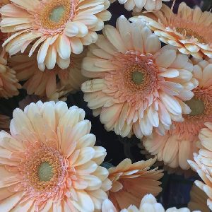
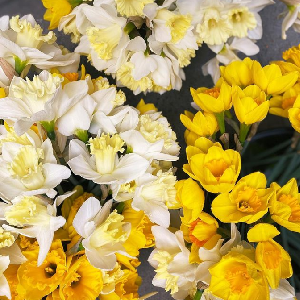

Le langage des fleurs

Anémone
Fleur délicate et pleine de charme, égaye les jardins et les bouquets dès les premiers jours du printemps. Avec ses pétales fins aux couleurs vives et son cœur sombre, elle incarne tantôt l'espoir, tantôt la protection. Appréciée pour sa beauté discrète et sa symbolique forte, l’anémone continue de captiver ceux qui croisent son regard élégant et mystérieux.
Pivoine
Symbole incontournable de la fête des mères, la pivoine revient chaque printemps pour orner les étals des fleuristes de ses pétales généreux et de son parfum léger. Associée à la prospérité, à l'élégance et à l'énergie, elle n’a pas fini de captiver et d’envoûter ceux qui la croisent...


Lys
Fleur étroitement associée à la royauté, le lys revêt de multiples symboliques dans le langage des fleurs. Dans de nombreuses traditions, il représente pureté et raffinement. Ses pétales aux formes élégantes suggèrent la renaissance et l’harmonie, faisant de lui un symbole de noblesse et de grâce éternelle.
Dhalia
Avec ses pétales pleins et volumineux, est un véritable hommage à la diversité et à l'élégance. Ses couleurs éclatantes et ses formes sculptées en font une fleur qui se distingue par sa générosité et sa beauté imposante. Symbole de respect et de gratitude, le dahlia exprime une force tranquille et une allure majestueuse qui ne manquent jamais d’impressionner


Gerbera
Avec ses teintes vibrantes et son allure dynamique, est un véritable symbole de joie et de convivialité. Ses fleurs éclatantes, aux contours nets, rappellent la simplicité et la fraîcheur de l'instant présent. Véritable source de bonheur, il incarne l'énergie positive et l'amitié sincère, apportant une touche de gaieté où qu'il soit.
Narcisse
Associé aux mythes anciens, le narcisse possède une symbolique profonde dans le langage des fleurs. Dans de nombreuses cultures, il incarne la renaissance et la vitalité. Avec ses pétales éclatants et sa forme élégante, le narcisse évoque la beauté passagère et la contemplation de soi, devenant ainsi un symbole de renouveau et de grâce discrète.
